Cell cycle and division
In genetics you learned what mitosis looks like: chromosomes condense, line up and split. Today: the machines that do it, and the checks that make it almost error-free.
After this lecture you can:
ELO 7 (cell cycle and division), with ELO 6 (cytoskeleton).
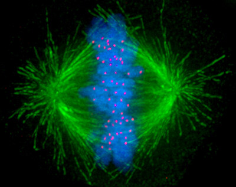
A human cell in metaphase: microtubules (green), DNA (blue), kinetochores (red).
How does the cell get it right, and what happens when it does not?
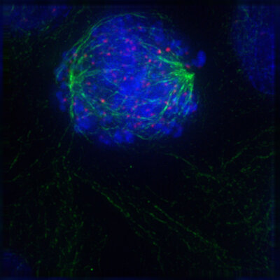
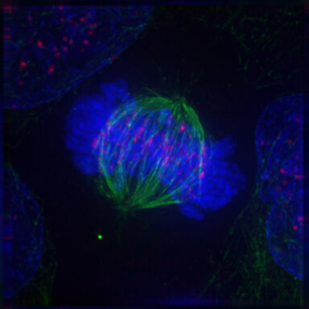
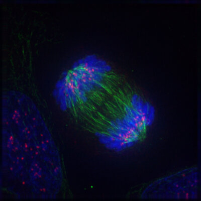
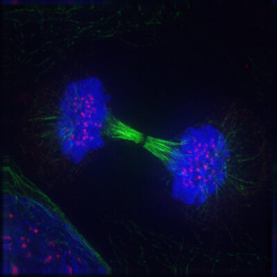
Human cells stained for DNA (blue), microtubules (green) and kinetochores (red). Prophase (not shown) happens inside the intact nucleus.
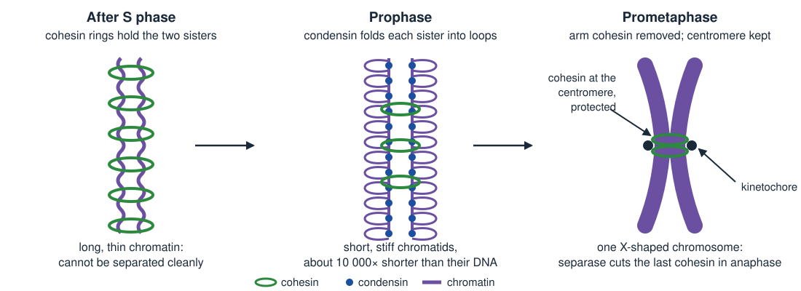
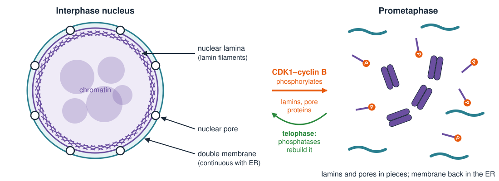
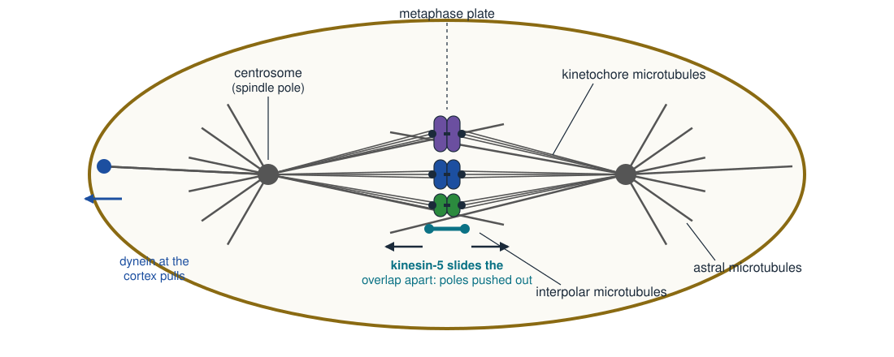
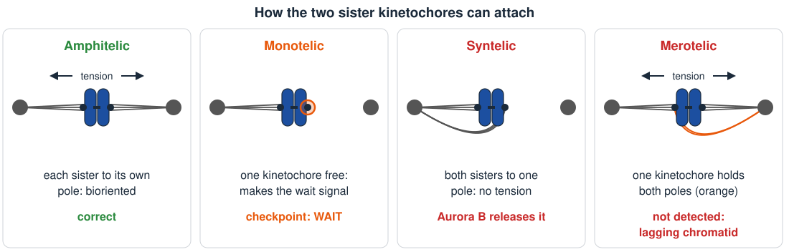
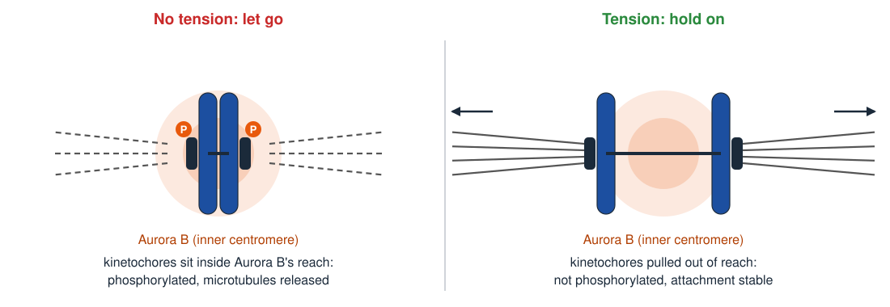
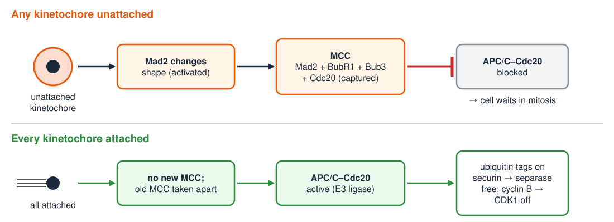
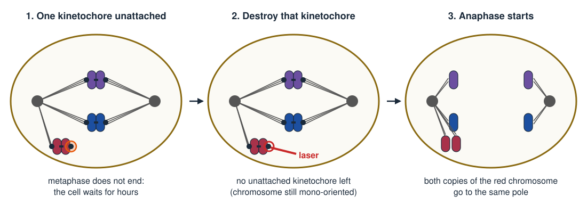
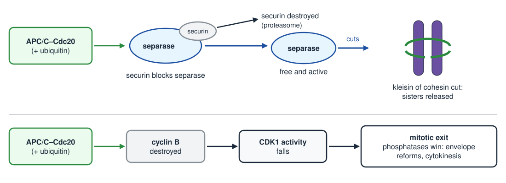
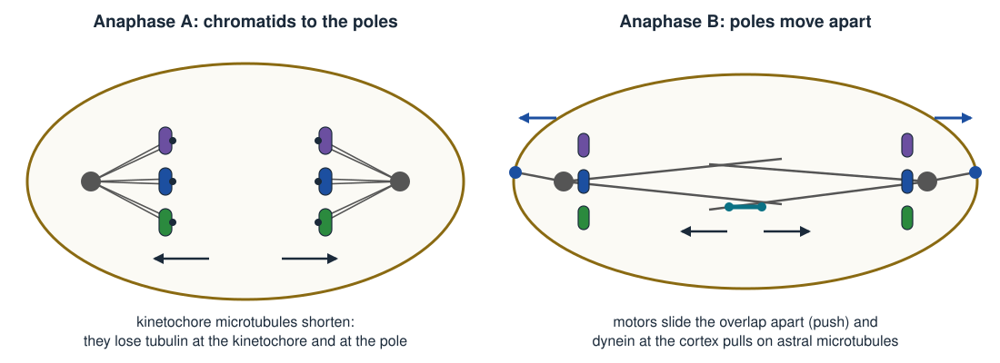
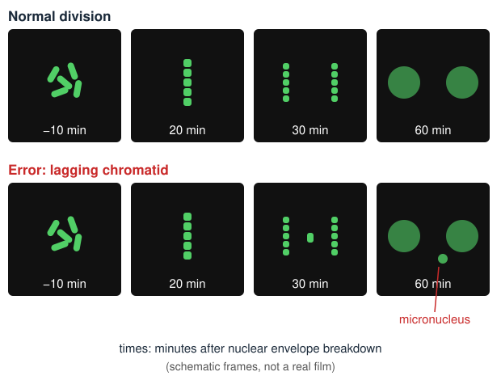
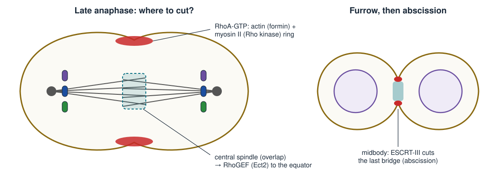
| Mitosis | Meiosis I | Meiosis II | |
|---|---|---|---|
| What separates | sister chromatids | homologous chromosomes | sister chromatids |
| What holds the pair | cohesin | crossovers + arm cohesin | centromere cohesin |
| Sister kinetochores | to opposite poles | to the same pole | to opposite poles |
| Cohesin cut by separase | all | arms only (centromere protected) | the rest |
| Result | 2 diploid cells | 2 cells, 1 copy of each chromosome | 4 haploid cells |
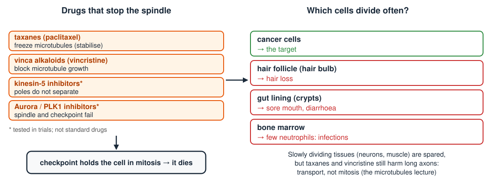
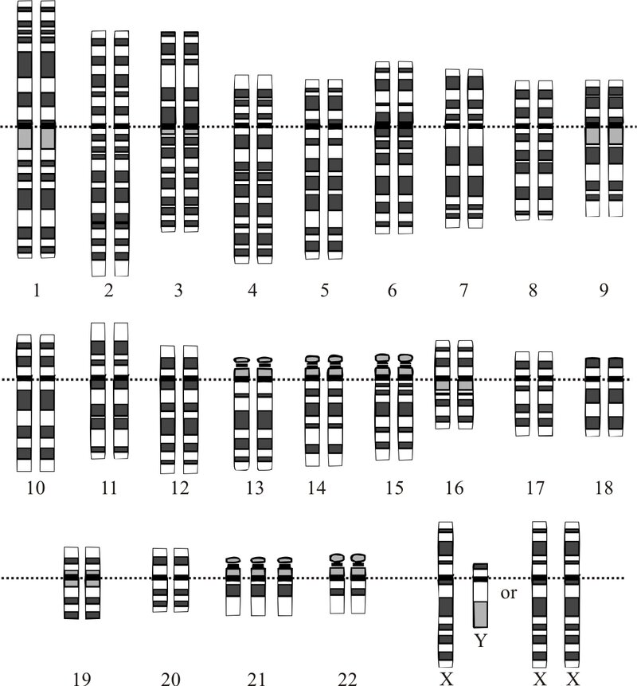
Karyotype drawing with three copies of chromosome 21 (trisomy 21).
Read more (optional): Alberts et al., Molecular Biology of the Cell, 7th ed., ch. 17.